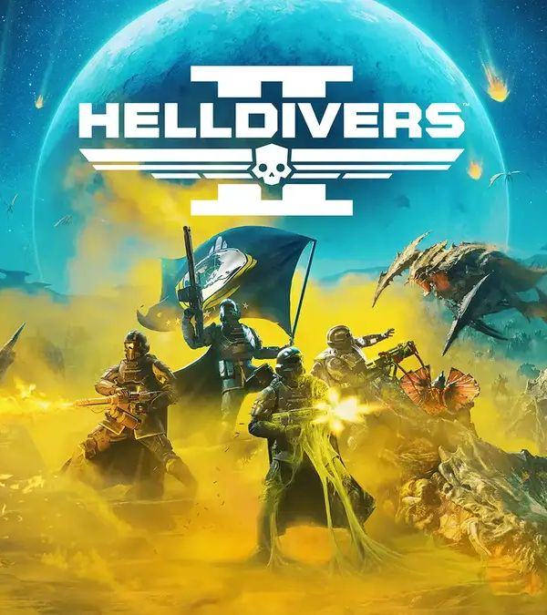
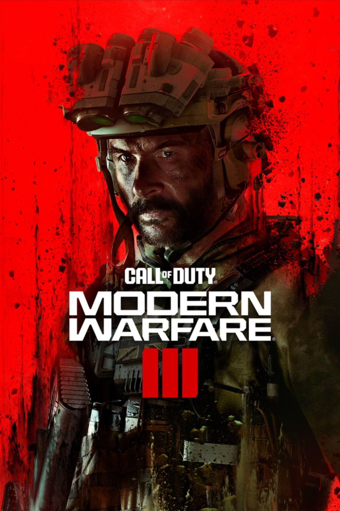
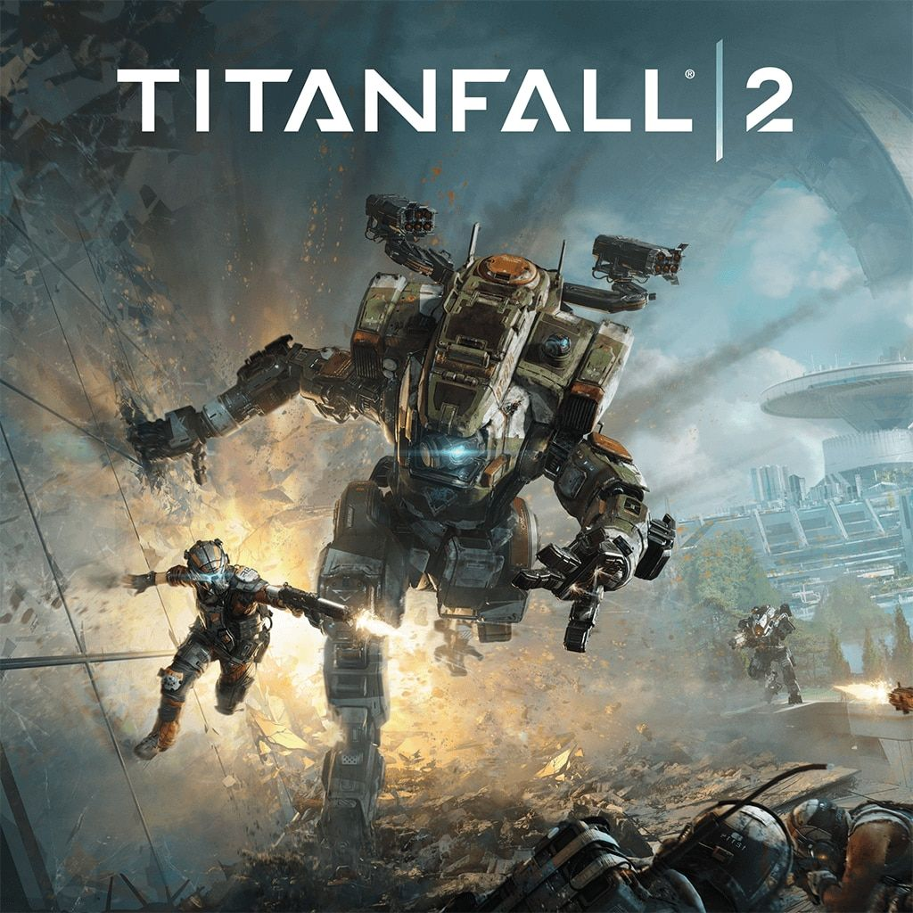
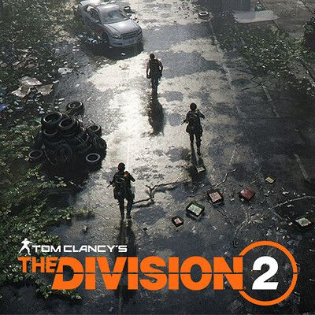
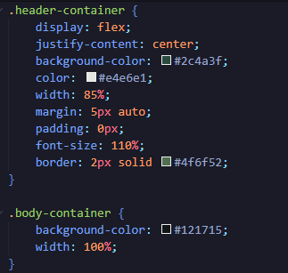
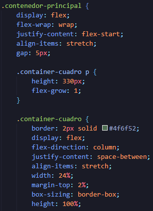
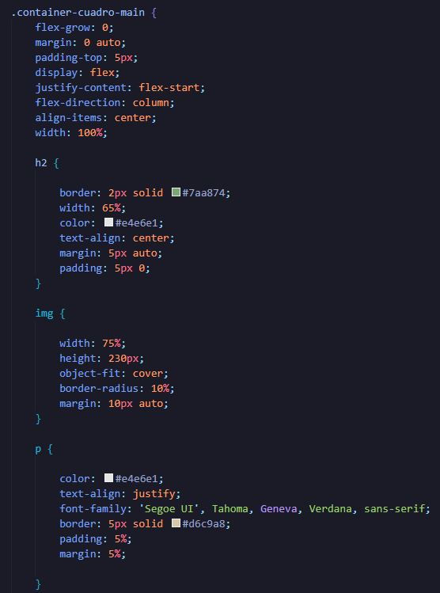

En lo personal, este juego me emocionó desde que lo anunciaron en 2024. Cuando vi los tráilers, supe que tenía todo lo que me gusta: trabajo en equipo y mucho frenesí. Es emocionante porque puedes enfrentarte a bichos, robots (autómatas) e Iluminados. Es un juego muy recomendable y deja una buena experiencia, aunque es mejor jugarlo con amigos, ya que en solitario no es tan divertido.

Me volví un experto en este juego usando el francotirador; la mayoría de mis bajas eran con esa arma. A veces combatía cuerpo a cuerpo, pero casi siempre hacía disparos lejanos a la cabeza. Llegué a obtener camuflajes dorados y todas las mejoras en mis armas. Es un muy buen juego y me divertía mucho. Call of Duty: Modern Warfare 3 tiene un excelente multijugador y fue lanzado el 10 de noviembre de 2023.

Titanfall 2 tiene una historia corta, pero su modo multijugador lo compensa. Junto con tu escuadrón debes proteger un reactor y apoyar a tus compañeros usando baterías para sus robots. También puedes bajar de tu titán para que te cubra y volver a subir en combate. Es un juego ideal para quienes disfrutan la adrenalina.

Este juego, ambientado en escenarios de Estados Unidos como el Pentágono y el Capitolio, es un cooperativo de mundo abierto donde puedes jugar con amigos para derrotar bandas y recuperar territorios. Destaca por su realismo en armas, equipamiento táctico y tecnología, como granadas curativas y drones con torreta.


